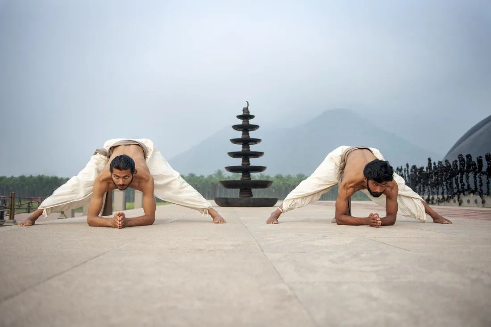
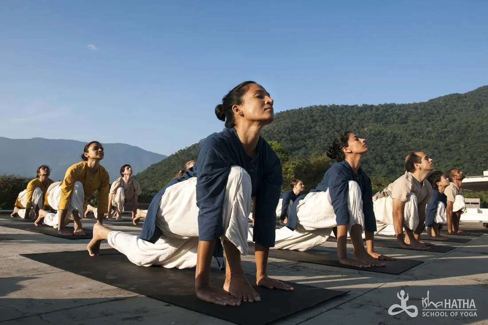
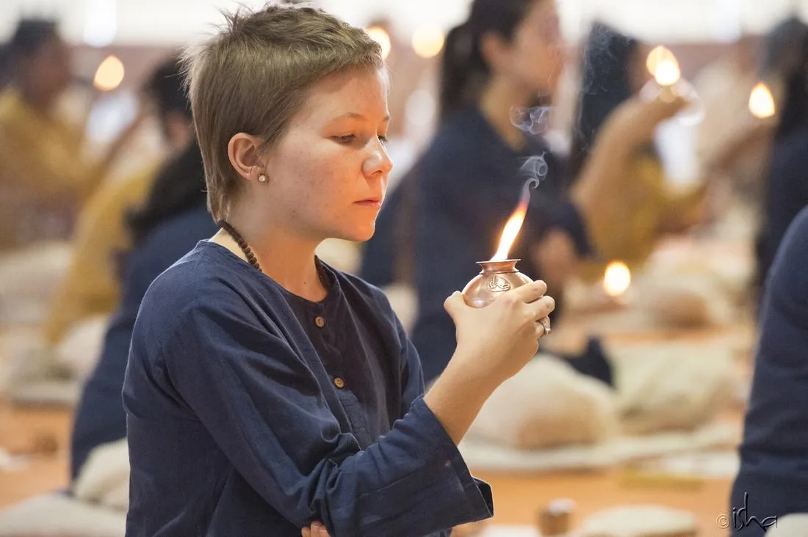
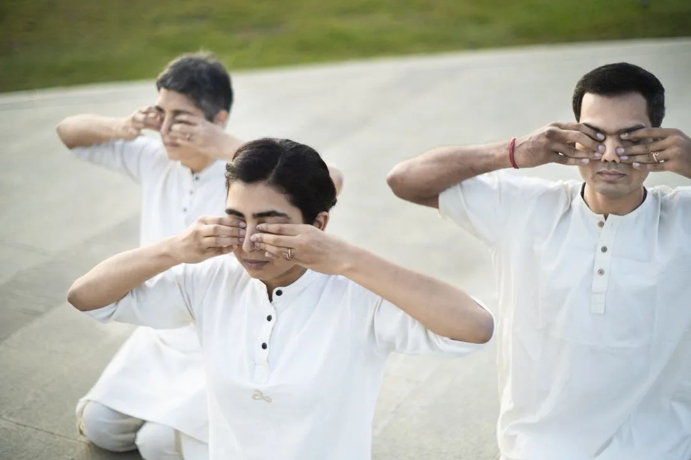

Yogic Fitness
Angamardana
An ancient fitness system rooted in yoga for peak physical and mental wellbeing. No equipment. No gym. Just you and the power of your system.
- Build strength and stamina
- Improve flexibility and agility
- Strengthen the spine and muscular system
- Bring lightness to the body

Being in tune with the Sun
Surya Kriya
Traditionally available only to select groups of yogis, Surya Kriya is being offered by Sadhguru for the hectic pace of today's world. A complete spiritual process by itself.
- Develop mental clarity, focus & concentration
- Reduce overthinking
- Boost energy levels
- Balance hormonal levels
- Prepare for deeper meditative states

Being in tune with the Existence
Yogasanas
An asana is a dynamic way of meditating. Through Yogasanas, one can transform the body and mind into a possibility for ultimate wellbeing.
- Improve physical health
- Bring mental clarity and emotional balance
- Create inner stillness and ease
- Prepare the body for meditation

Elemental Cleansing
Bhuta Shuddhi
A process of cleansing the five fundamental elements — earth, water, fire, air, and space — within the human system. Laying the foundation for deeper health and higher yogic practices.
Know More / Explore

Sensory Cleansing
Shanmukhi Mudra
A meditative mudra that brings awareness to the eyes, ears, and nose simultaneously — cleansing and restoring the sensory system.
- Helps with ailments of the ears, eyes, and nose
- Brings a natural glow to the face
- Improves vision
- Enhances meditativeness — helps turn inward
Eye Health
Eye Care Practices
A specialised set of yogic exercises for the eyes. Especially beneficial for long-sightedness and short-sightedness — aimed at relieving dependency on glasses over time.
- Relieve strain from screens and long hours
- Improve and support better vision
- Lubricate and strengthen the ocular muscles
- Prevent long-term eye fatigue

Respiratory
Bhastrika Kriya
A powerful breathing kriya that dramatically increases lung capacity, oxygenates the blood, and is particularly effective for respiratory problems, asthma, and low energy states.
Know More / Explore
ENT Health
Jala Neti
A classical nasal cleansing practice using saline water. Clears the nasal passage, sinuses, and ear-nose-throat pathways. Highly beneficial for allergies, sinusitis, and ENT concerns.
Know More / Explore
🌿 Consult a Teacher